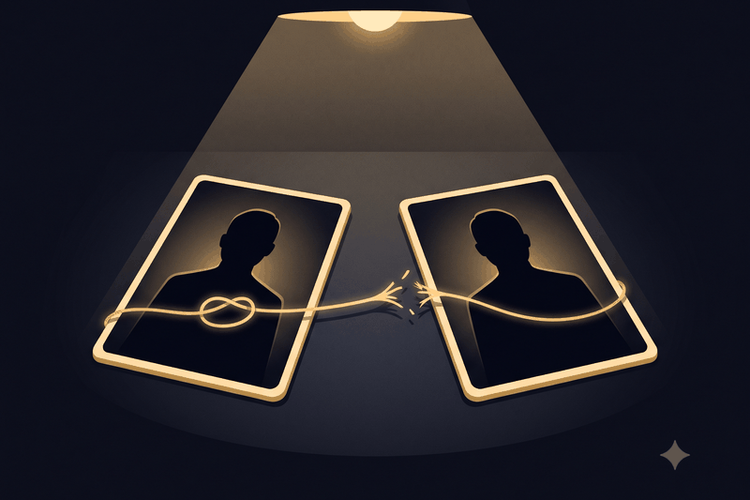
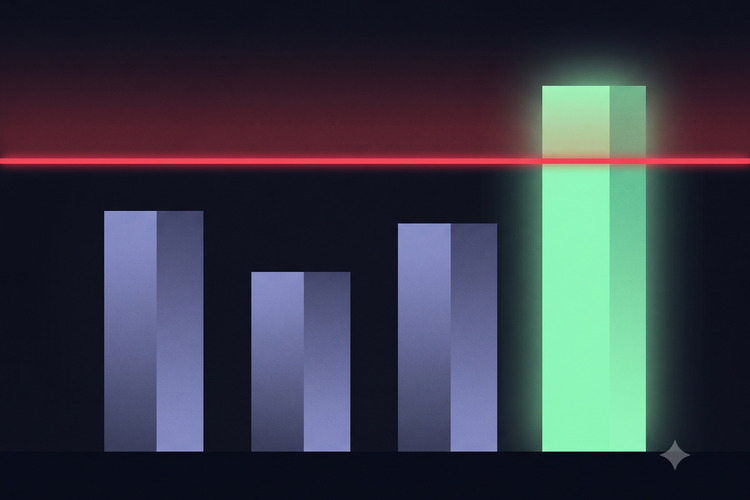
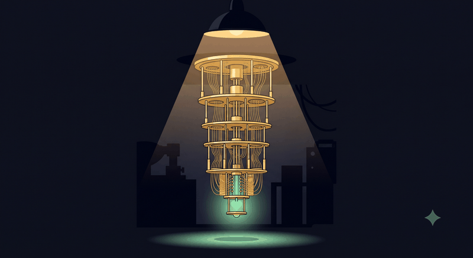

The setup, in three steps
Suspects come in pairs. Every case is two machine-suspects who are secretly either PARTNERS (their stories agree no matter who is questioned first) or RIVALS (their stories come out exactly opposite depending on order). Your job: say which.

One question each. You may question each suspect exactly once, through an interrogation kit. Here's the wall: mathematics proves that no kit that exists and no kit anyone will ever invent can average above 91% on this task. Not "hard to beat" — proven impossible, the way perpetual motion is impossible.

The forbidden zone. A quantum computer can question both suspects in a superposition of both orders at once — a physically different kind of question. Measured score: 97.8%. You'll earn that kit after ten straight rounds.

Game rules
- Each round, a case is dealt: two suspects, hidden as silhouettes. (If you could see who they are, you could memorize the answer key — the ceiling is a theorem about detectives who can't see inside the boxes. Identities are revealed after you call.)
- PARTNERS and RIVALS are dealt 50/50, so guessing blindly scores 50%.
- Choose a kit, then press Interrogate. The kit questions each suspect once and reports its verdict: "PARTNERS" or "RIVALS."
- Kits are truthful but imperfect — each has a real, physics-derived success rate per case. The Rookie Kit (separate standard interviews) averages 57.5%. The Entangled Casefile (a linked two-part file each suspect stamps once) averages 75% — the strongest kit we know how to build.
- You make the final call — trust your kit or override it. Correct call = 1 point.
- After 10 rounds you earn the ⚡ Switch Badge: the same cases resolved with the measured odds of the real quantum switch. Watch the meter cross the line the theorem draws.
A detective's tip: your best kit has a blind spot — a kind of suspect it is reliably, perfectly wrong about. You'll find it the hard way: by losing. The reveal log will tell you why. (It's real physics, not a gimmick — the same feature that makes this game winnable at all.)
The interrogation room
Interrogate with a kit
CASE #— · suspects unidentified

Make your call
— press a kit to interrogate —
The kit's report is truthful but imperfect — trust it, or override it with your hunch. Your call is what scores.
Your accuracy
✓ 0 ✗ 0 0 played
The red line at 91% is THE CEILING — the proven maximum for any kit, ever, under definite causal order. Beyond it is the forbidden zone: only the switch reaches it.
Case log
🔍 What's really true here
The suspects are quantum operations. PARTNERS = commuting, RIVALS = anticommuting, dealt 50/50 from a 20-case deck. Kit reports resolve against real physics-derived odds per case; the Casefile's blind spot (the "do-nothing" suspect) is a real structural fact — remove those cases and the theorem's ceiling silently rises to 100%, which is why they're load-bearing.
The ceiling is a theorem. For this balanced game the causally-separable bound is 0.9098 (Araújo et al. 2015; re-derived from scratch and machine-verified in the repository, including the optimal input distribution the original paper omitted). It covers fixed orders, random mixtures of orders, and orders chosen adaptively mid-game — everything except no definite order at all.
The switch column is a measurement. The real experiment scored
p̂ = 0.9769 ± 0.0005 — 216.8σ above the ceiling — on ibm_marrakesh
(job d9826lkqp3as739sd2lg, frozen pre-registration), and replicated the next day
on ibm_fez, a chip it had never touched, at 0.9738. Even the single worst case in
the deck beats the ceiling on its own.